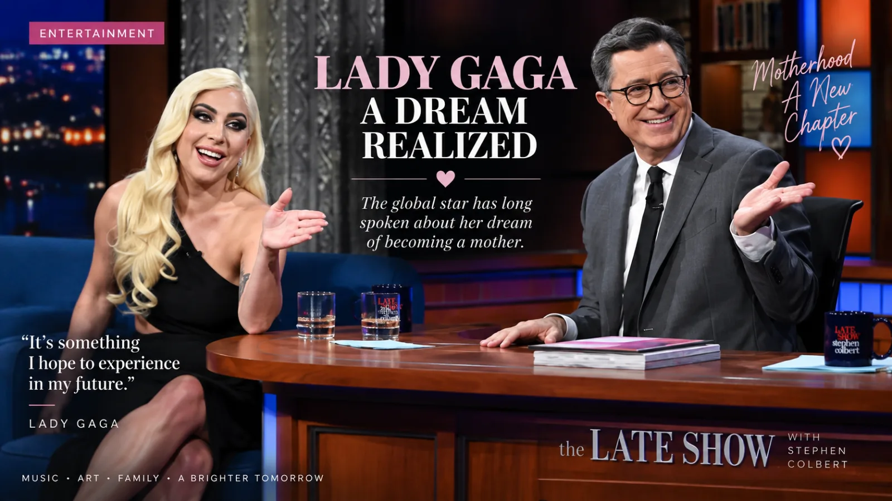
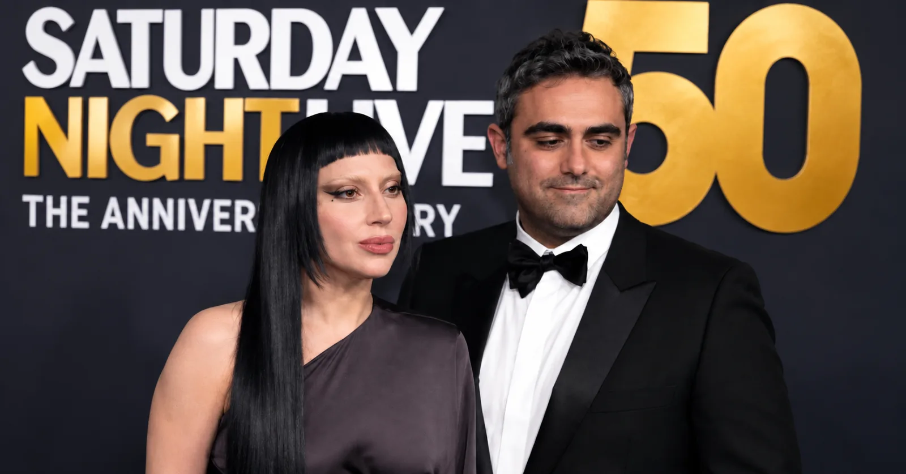

Lady Gaga has welcomed her first child with fiancé Michael Polansky, ushering in a major new personal chapter for the global icon. The happy news marks the fulfillment of an ambition the singer and actress has openly shared for years.
A Longtime Dream Realized
Reports from outlets including PEOPLE and Vogue confirmed the arrival of the couple's first baby, noting that details such as the child's name and sex have remained private.
Motherhood is a milestone Gaga has reflected on repeatedly across her career. In a 2024 Vogue interview, she spoke openly about love, family, and her connection with Polansky, acknowledging that having children was a long-held personal aspiration.

A Bond Built Away from the Spotlight
Gaga and Polansky began dating around 2019 and became publicly known as a couple in 2020. Their bond deepened significantly during the COVID-19 pandemic, when they spent an extended period together in Malibu away from the demands of public life.
Polansky has maintained a relatively private profile compared to Gaga's world-famous persona. Following their engagement in 2024, the couple continued to safeguard their private life, keeping their focus grounded as they prepared to expand their family.

A Quiet Family Milestone
Known affectionately by millions of fans worldwide as Mother Monster, Gaga now experiences motherhood in the most literal and personal sense. While supporters celebrated the arrival, the family has maintained their privacy, with Gaga's representatives withholding immediate public comment.
After years defined by high-profile tours, Grammy Awards, and Hollywood screen roles, this next chapter gives Gaga and Polansky the chance to savor family life away from the red carpets and camera flashes.
As Lady Gaga and Michael Polansky begin life as parents, they step into a deeply meaningful new season centered around their growing family.